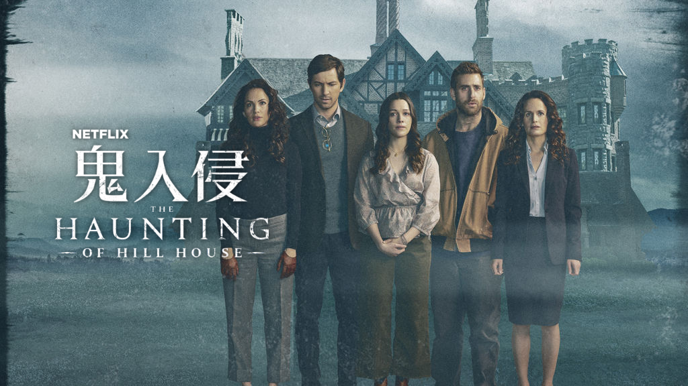
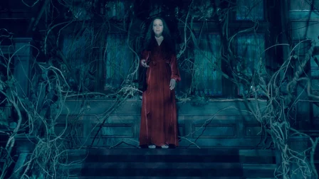

鬼入侵
The Haunting of Hill House

基本資訊
主創｜麥可·弗拉納根
季數｜1
集數｜10
國家｜美國
製作公司｜弗拉納根製片、安培林電視公司
派拉蒙電視公司
電視網｜Netflix
執行製作｜麥可·弗拉納根、崔佛·梅西
賈斯汀·法維、達瑞爾·法蘭克
梅若蒂絲·艾維利爾
首播日期｜2018年10月12日
終映日期｜至今
演員與角色
麥可·俞斯曼｜史蒂文·克蘭
卡拉·裘吉諾｜奧莉維亞·克蘭
亨利·湯瑪斯｜休·克蘭（青年）
伊莉莎白·瑞瑟｜雪麗·克蘭-哈里斯
奧立佛·傑克森-柯恩｜路克·克蘭
凱特·席格｜席兒·克蘭
維多莉亞·佩德雷蒂｜娜爾·克蘭
露露·威爾森｜雪麗·克蘭（幼年）
麥肯娜·葛瑞斯｜席兒·克蘭（幼年）
派克斯頓·辛格頓｜史蒂文·克蘭（幼年）
朱利安·希利亞｜路克·克蘭（幼年）
凡奧莉·麥葛羅｜娜爾·克蘭（幼年）
提摩西·赫頓｜休·克蘭（老年）
劇情簡介
過去與現在接連閃現，一個破碎的家庭面對老家嚇人的回憶，以及驅使他們離開的可怕事件。（Netflix）
首季改編自雪麗·傑克森（Shirley Jackson）的同名小說，故事敘述五個兄弟姊妹在美國最有名的鬼屋中長大。成年之後，他們因最小的妹妹自殺而再度聚首，她的死也讓他們不得不面對過去的陰魂，有些就潛伏在他們的內心，有些則真的潛伏在這幢經典鬼屋的暗影中。（Netflix媒體中心）
評價

2018年，在這個驚悚恐怖片均已成熟至鮮少有人能有所突破的景況下，由麥可·弗拉納根（Mike Flanagan）執行、改編自雪麗·傑克森（Shirley Jackson）經典哥德恐怖小說的同名影集，不僅繳出令人驚豔的成品，甚至還是長達10集的影集，完全為這品質枯萎的恐怖類型市場，立下了一個新指標。
《鬼入侵》以克蘭（Crain）家族的七名成員為中心，描述這一家人在某年暑假搬進擁有悠久歷史的希爾山莊（Hill House）後，經歷起各種虛虛實實的驚悚事件，並以女主人奧莉維亞（Olivia）自殺身亡的悲劇告終這趟旅程。隨著時間走遠，成年後的么女娜爾（Nell）於某夜返回希爾山莊自縊，第二次的家族悲劇，迫使早已分崩離析的克蘭一家人重新聚首，一同面對那揮之不去且再次侵蝕他們的陰霾。究竟奧莉維亞身亡當晚的真相為何？娜爾為何會步上母親的後塵？希爾山莊又具有著什麼樣的魔力？那些縈繞在克蘭一家人身邊的靈異事件，究竟是Hill House促使的恐懼，還是一切都只是精神疾病在作祟？
雖然身為觀眾的我們，都知道這部片是齣驚悚恐怖片，即俗稱之鬼片，但劇中的鬼魅似乎又有合理的空間，解釋為人們精神異常的產物。我們就如劇中的人物，無法分清情節的虛與實，而編劇似乎不急於揭開真相，反而選擇慢慢細說。這樣的敘事手法和結構設計，非常考驗觀眾的品味和收視力，但編導卻向觀眾證明了他們的能力，能將作品推到恐怖片的新境界。

本劇雖是齣恐怖節目，但重心卻不只著眼在類型上的操作和呈現，更多地是以細膩的刻劃來形塑各個角色。當角色挖掘地夠深、夠立體，故事中被觸發的事件，不僅會帶動整個敘事，還會深深地影響著角色的身心，此舉便能順利地將劇情佐上恐怖元素，而恐怖元素還能順利地深植人設，使得劇集內外兼具，要淺有氛圍，要深有恐懼，滿足了娛樂性與細緻度兩種不同味蕾。
從事件切入咀嚼角色，我們能夠看見編導細膩的創作心思：究竟一件悲劇、靈異事件或恐懼的情緒，會如何影響我們的身心養成？當原生家庭因為若有似無的騷靈事件而破碎，自認未曾見過靈體的人，選擇追尋鬼魅的蹤跡，或許是期盼能藉由親眼見證、親身經歷的方式，來得到悲劇的解答。某些在懵懂時期，卻身處事件核心的人，選擇濫用藥物來麻痺自我，使自己沉浸在恍惚的狀態，藉以逃避清晰的恐懼。體會過模糊卻滿溢著驚恐的人，拒絕感受他人的情感，透過封閉自我的手段，免去面對那些不必要，且可能觸發夢靨的情緒。
那雙未尋得答案而從眼神中流露出哀傷的眼神，因為家庭悲劇而無法擁有建立新生家庭的信念；以自行其是的態度不願面對缺陷的虛偽，擅於算計權衡卻壯大了罪惡；不願敞開的心胸，拒絕情感交流的冷漠；因恐懼而無法自我約束，努力對抗不安的冷顫；終在失意而被蠱惑，因渴望重拾愛而殞落之際，被迫從否認、假裝、拒絕、逃避乃至面對過去、面對自我。悲劇之後，每個人的內心深處，都築起了一道道的心牆，心上的缺口，卻在無形中，成為被恐懼侵占的入口。
鬼魂，到底是什麼樣的存在？就如臺劇《夢裡的一千道牆》所塑造的，是人類執念的化身。人類是擁有豐富情感的生物，對於所擁有的、曾經擁有的，抑或未曾擁有的，不管是無形或有形，都會存在著一種執著，這個執著所產生的執念，可以是快樂地、幸福地，也可能是憤怒地、恐懼地。Hill House就像另類桃花源，只不過是飄散著陰鬱和恐怖的氣息，但它乘載了人們的執念，那些放不下、放不了手的種種。
在希爾山莊中，真正恐怖的，其實並非嚇人的鬼魅，而是人類的心魔。當現實的殘酷、人生的不順遂，抑或低落的情緒，餵養著恐懼使其壯大，人們會開始自我防衛。當我們選擇過度保護著，卻越是抓不緊想守護的人事物，最終，只能將自己囚禁在一個名為愛的封閉結構。鬼魅的真與假，其實已不再重要，當心魔凌駕於理智之上，壓抑著，就只剩容易受擺佈的軀殼，那些恐懼甚至還可能是源自於自己。
透過角色，編導丟出了許多值得令我們深思的課題。受挫的人生，對一個人的成長來說，是好還是壞？愛該如何拿捏？如何適時地放手？人們的冷漠與忽視，對精神疾病的低估，無視心理狀態，都可能將自己或是他人推向無底深淵。當害怕與恐慌的情緒，如永無止盡般地不斷擴大、蔓延，理解和包容，是否能夠拯救我們受傷的心靈？
本劇恐怖驚悚的氛圍，配合劇情營造地十分得宜，高超的運鏡嘗試更具藝術涵養。故事橫跨兩個時空，選角卻精準地拿捏兩代演員間的相似性，教人驚艷，卡拉·裘吉諾（Carla Gugino）注意細節的演繹，使人能夠深深地感受到角色掙扎的內心世界。編導透過事件發生後而生的創傷，細膩刻劃對角色的身心，對於精神疾病、人心的恐懼，描繪地相當真實且細緻，角色流露出的人味，因能產生共鳴而動人，整部作品值得深度品味。